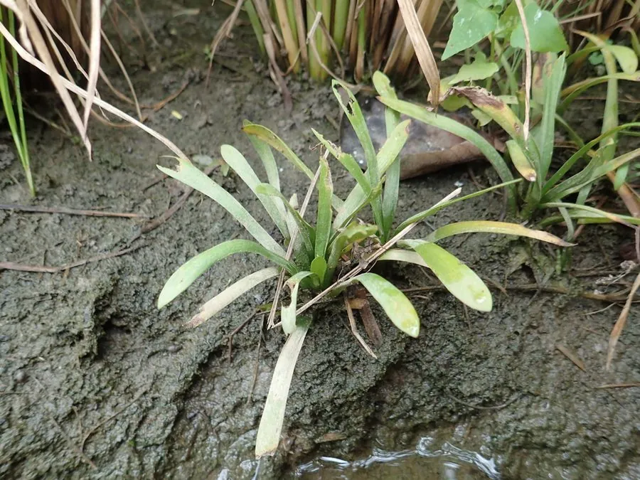

水生植物 · 植物界
矮慈姑 Sagittaria pygmaea

泽泻科慈姑属一年生矮小水生草本，叶片线状披针形，花小白色，块茎可食，常见于中国南方水稻田和浅水湿地。
- 分类
- 门被子植物门纲单子叶植物纲目泽泻目科泽泻科属慈姑属
- 栖息环境
- 水稻田、浅水湿地和沟渠，喜温暖、淤泥肥沃
- 地理分布
- 中国、日本及东南亚，中国南方各地常见
- 保护级别
- 暂无评估
物种志
矮慈姑为泽泻科慈姑属的一年生水生草本，株高 10–25 厘米，根状茎短，末端形成小球茎。叶片基生，线状披针形，长 5–15 厘米，宽 0.5–1 厘米，沉水或挺水。花单性，雌雄同株，花小、白色，花瓣 3 枚，花期 6–9 月；果实为瘦果，聚生成球形。
矮慈姑分布于中国、日本和东南亚的稻田、浅水湿地和沟渠，喜温暖、阳光充足和肥沃的淤泥，常作为稻田杂草出现。它的地下小球茎富含淀粉，可煮食，也可入药；植株矮小，在水景中可作前景点缀。栽培以小球茎和种子繁殖为主，生长期间保持浅水；在稻田中需注意防除，避免与水稻争夺养分。
形态与习性
- 株高10–25 厘米
- 叶片线状披针形，长 5–15 厘米
- 花期6–9 月，花小、白色
- 水深浅水至湿润泥面
- 光照喜充足阳光
- 土壤肥沃的稻田淤泥
- 繁殖小球茎、种子繁殖
- 主要用途球茎可食，也可入药
趣味知识
- 矮慈姑的地下小球茎富含淀粉，可以煮食。
- 它常生长在水稻田中，是南方稻田常见的杂草。
- 矮慈姑植株矮小，叶片线形，与高大的慈姑明显不同。